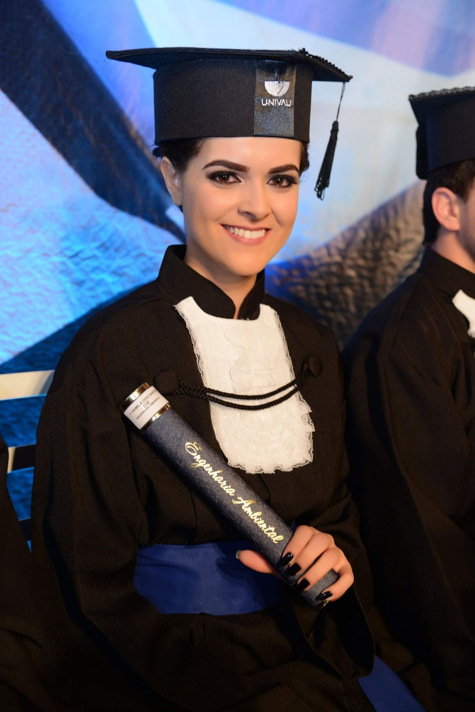
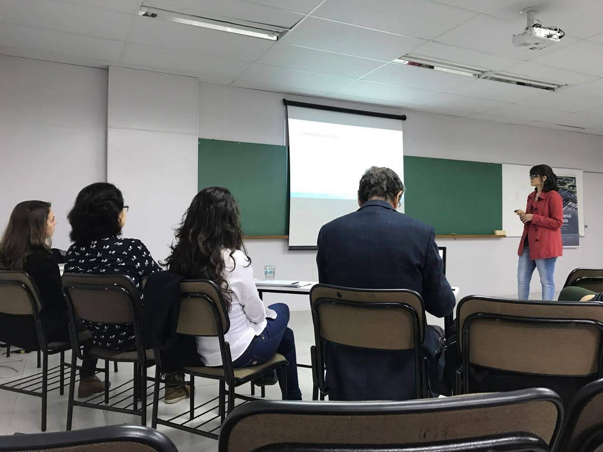
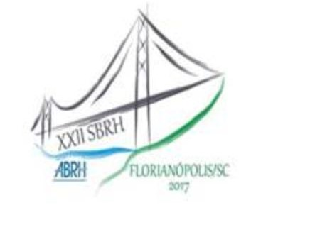

Olá, Sou a Kamila!
Engenheira Ambiental e de Segurança do Trabalho apaixonada por resolver problemas e buscar soluções eficientes.
Com um olhar analítico e aptidão para perceber tendência em dados, estou em transição de carreira para a área de TI, focando em desenvolvimento backend e análise de dados.


Habilidades
Habilidades
Soft Skills
Empatia
Mentalidade de aprendiz
Pensamento analítico e criativo
Colaboração e trabalho em equipe
Proatividade
Disciplina
Flexibilidade e resiliência
Relacionamento interpessoal
Liderança
Visão global
Hard Skills
Básico
Lógica de programação
Linguagens de programação: C#, JavaScript, HTML e CSS
Intermediário
Inglês
Educação
Educação
Graduação
Análise e Desenvolvimento de Sistemas
Senac (2022-2024)
Engenharia de Segurança do Trabalho
Universidade Cruzeiro do Sul (2020)
Engenharia Ambiental
Universidade do Vale do Itajaí (2017)
Cursos
Curso Desenvolvedores de Software Básico
UFSC (2022)
Curso Especial de Supervisor de Segurança Portuária
Academia Nacional de Polícia
Curso Básico de Atendimento à Emergências (CBAE)
(Corpo de Bombeiros Militar SC)
Outros
Cursou disciplina internacional
Principle of environmental sciences and technology;
Publicou um artigo no XXII Simpósio Brasileiro de Recursos Hídricos:
“Reconstituição de vazões no extremo oeste de Santa Catarina com o uso do modelo SWAT”
Experiência
Experiência
Poly Terminais Portuários
Supervisora de SSMA (out/2021 a jun/2023)
Técnica em Meio Ambiente (2020-2021)
Beto Carrero World
Técnica em Meio Ambiente (2019-2020)
Transportes Dalçoquio
Estagiária de meio ambiente (2015 - 2017)
Assistente ambiental (2017-2018)
Portonave
Estagiária de meio ambiente (2014-2015)